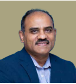
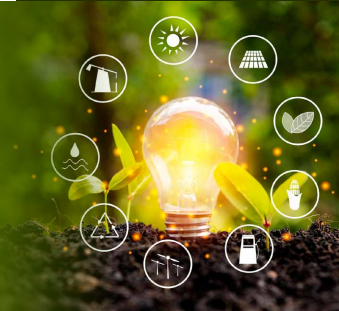

MOURI Tech:
 MOURI TECH
MOURI TECH
FOUNDATION
MOURI Tech:
Leading the ESG Trail
MOURI TECH FOUNDATION
“MOURI Tech has responded intuitively to challenges and thrived on optimism.
We operate with impeccable governance
procedures while demonstrating
responsibility toward the needs of society.
Ingraining ESG into strategy has come
naturally to us, and I am confident that
sustainability has and will continue to be an
integral part of our vision.
Ingraining ESG into strategy has come
naturally to us, and I am confident that
sustainability has and will continue to be an
integral part of our vision.”
Anil Yerramreddy, Global CEO, MOURI Tech
